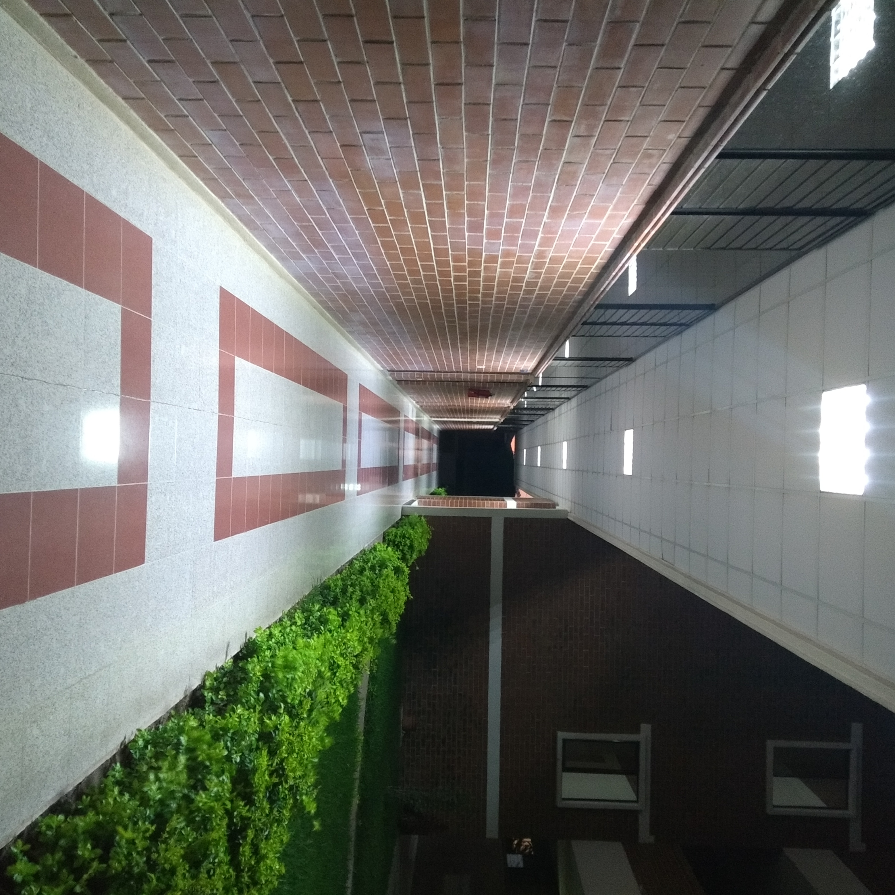

Actualidad
En mi dia a dia me dirijo al trabajo, esto es de luner a viernes a partir de la 8:00 am y salida a la 6:00 pm.
Tengo que ir a verificar que el personal este haciendo bien el trabajo del internet y estan al pendiente del
soporte tecnico para los clinetes que tienen contratado servicio de internet residencia. Tambien tengo que ir
a algunos institutos y colegios del pueblo para dar mantenimiento a sus computadoras o en algunos casos especiales
mantenimiento correctivo.
Esto es mi que hacer de lunes a viernes.
Los días sabados me lenvanto de madrugada para ir a estudiar a la Universidad Mariano Galvez de Guatemala Campus Jutiapa,
estoy cursando la carrera de Ingenieria en sistemas estoy cursando
el octavo ciclo de la carrea.